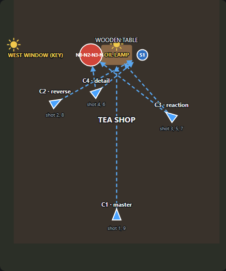

The same floor plan goes with every shot; each shot's prompt (right) names its camera on the plan and gives the framing.

One photorealistic film still for a Sri Lankan television drama, a wide 16:9 frame: one shot of a storyboard, painted as a real place with mannequins for people. A single picture, no panels. Reference images, in order: image 1 is the master floor plan of this scene seen from above; How to read image 1, the MASTER FLOOR PLAN of this scene seen from above (north is up), the same plan for every shot of the scene: the place is drawn flat, blue for water, brown for earth and paths, green for fields, grey for concrete or stone, with their names. Each round pin is a person at one moment of the scene, in that person's mannequin colour, labelled with their initial and a number in story order (A1, A2 ...); a dashed line with an arrowhead is a walk. Each triangle is a camera position labelled C1, C2 ..., pointing the way it looks, with dashed arrows to what it films. The words below say which camera THIS shot is from and where each person is on the plan at this instant. Paint what that camera sees from where it stands: the people, things and place in front of it, on the same sides of the frame as the plan puts them, near things large and far things small. Never draw the plan, its pins, triangles, arrows, lines or any of its words in the picture. THIS SHOT is from camera C1 on the master floor plan (the triangle labelled C1, the master setup): the camera stands there at standing eye height and looks toward the wooden table, 4.7 m away, at eye angle, through a 28 mm lens. The camera does not move. Framing: a wide shot: the place around them, every person full length and small in the frame. In this frame, at the shot's first instant: The red mannequin (Nimal) is seated, at N1 on the plan: at frame left, 4.8 m from the camera, its head turned to frame right, looking at Saman toward frame right; the eyes are off the lens, never into the camera. The blue mannequin (Saman) is seated, at S1 on the plan: at frame right, 4.8 m from the camera, its head turned to frame left, looking at Nimal toward frame left; the eyes are off the lens, never into the camera. The moment: Nimal is seated, eyes on Saman, still and attentive, hands relaxed near his lap. Saman is seated, eyes on Nimal, smiling easily, shoulders loose. The two tea cups: the glass tea cups rest apart near the back half of the tabletop, leaving the near edge clear. Place and light: A small village tea shop at dusk: one wooden table, a window on the left wall, an oil lamp. Time: dusk. Soft, fading dusk enters from the west window. The lit oil lamp supplies a small amber fill across the table. Preserve the same source directions and exposure continuity throughout. The key light comes from frame left. People (every panel): every person is a smooth, matte, faceless artist's mannequin in one solid colour, with jointed limbs and simple hands: Nimal is the red mannequin; Saman is the blue mannequin. A small raised ridge on the front of the head, where a nose would be, shows which way the head faces. Each mannequin has the person's real height and build and sits, stands and holds things exactly as a real person would. No faces, no hair, no clothes, no skin: only the mannequin colour. The place, the light and the weather are a real, photorealistic film still. Props (every panel): every prop (two tea cups, land deed) and every small thing a person holds or carries is a plain, smooth, matte white clay stand-in of the real object: its real size and outline, and nothing else: no screen, buttons, logo, lettering, pattern or colour. A vehicle is never a clay stand-in: every vehicle is painted real, exactly as its vehicle plate shows it, with its real colours. Each stand-in is held, carried or set down exactly as the real thing would be. The place itself is real: its ground, walls, water, plants, what is built into it, painted as a real photograph, never as clay. Bodies and things (every panel): every mannequin has exactly two arms and two hands, each hand where the panel says. A held stand-in is gripped by the hand the panel names, its handle or edge inside the closed fingers; nothing hangs or floats in the air. Feet stand flat on the ground the panel names. A bag hangs from the shoulder or forearm the panel names. Draw NO text of any kind: no captions, labels, numbers, arrows or marks. The people, place and everyday details are Sri Lankan.
One photorealistic film still for a Sri Lankan television drama, a wide 16:9 frame: one shot of a storyboard, painted as a real place with mannequins for people. A single picture, no panels. Reference images, in order: image 1 is the master floor plan of this scene seen from above; How to read image 1, the MASTER FLOOR PLAN of this scene seen from above (north is up), the same plan for every shot of the scene: the place is drawn flat, blue for water, brown for earth and paths, green for fields, grey for concrete or stone, with their names. Each round pin is a person at one moment of the scene, in that person's mannequin colour, labelled with their initial and a number in story order (A1, A2 ...); a dashed line with an arrowhead is a walk. Each triangle is a camera position labelled C1, C2 ..., pointing the way it looks, with dashed arrows to what it films. The words below say which camera THIS shot is from and where each person is on the plan at this instant. Paint what that camera sees from where it stands: the people, things and place in front of it, on the same sides of the frame as the plan puts them, near things large and far things small. Never draw the plan, its pins, triangles, arrows, lines or any of its words in the picture. THIS SHOT is from camera C2 on the master floor plan (the triangle labelled C2, the reverse setup): the camera stands there at seated eye height and looks toward Saman (pin S1), 2.9 m away, at eye angle, through a 110 mm lens. The camera does not move. Framing: a medium close-up: head and chest only; the frame cuts at mid-chest. In this frame, at the shot's first instant: The blue mannequin (Saman) is seated, at S1 on the plan: at frame centre, 2.9 m from the camera, its head toward the camera, looking at Nimal toward frame left; the eyes are off the lens, never into the camera. Outside this frame (do not paint): Nimal. The moment: Saman is seated, eyes on Nimal, open smile, animated eyes. Place and light: A small village tea shop at dusk: one wooden table, a window on the left wall, an oil lamp. Time: dusk. Soft, fading dusk enters from the west window. The lit oil lamp supplies a small amber fill across the table. Preserve the same source directions and exposure continuity throughout. The key light comes from behind the camera. People (every panel): every person is a smooth, matte, faceless artist's mannequin in one solid colour, with jointed limbs and simple hands: Nimal is the red mannequin; Saman is the blue mannequin. A small raised ridge on the front of the head, where a nose would be, shows which way the head faces. Each mannequin has the person's real height and build and sits, stands and holds things exactly as a real person would. No faces, no hair, no clothes, no skin: only the mannequin colour. The place, the light and the weather are a real, photorealistic film still. Props (every panel): every prop (two tea cups, land deed) and every small thing a person holds or carries is a plain, smooth, matte white clay stand-in of the real object: its real size and outline, and nothing else: no screen, buttons, logo, lettering, pattern or colour. A vehicle is never a clay stand-in: every vehicle is painted real, exactly as its vehicle plate shows it, with its real colours. Each stand-in is held, carried or set down exactly as the real thing would be. The place itself is real: its ground, walls, water, plants, what is built into it, painted as a real photograph, never as clay. Bodies and things (every panel): every mannequin has exactly two arms and two hands, each hand where the panel says. A held stand-in is gripped by the hand the panel names, its handle or edge inside the closed fingers; nothing hangs or floats in the air. Feet stand flat on the ground the panel names. A bag hangs from the shoulder or forearm the panel names. Draw NO text of any kind: no captions, labels, numbers, arrows or marks. The people, place and everyday details are Sri Lankan.
One photorealistic film still for a Sri Lankan television drama, a wide 16:9 frame: one shot of a storyboard, painted as a real place with mannequins for people. A single picture, no panels. Reference images, in order: image 1 is the master floor plan of this scene seen from above; How to read image 1, the MASTER FLOOR PLAN of this scene seen from above (north is up), the same plan for every shot of the scene: the place is drawn flat, blue for water, brown for earth and paths, green for fields, grey for concrete or stone, with their names. Each round pin is a person at one moment of the scene, in that person's mannequin colour, labelled with their initial and a number in story order (A1, A2 ...); a dashed line with an arrowhead is a walk. Each triangle is a camera position labelled C1, C2 ..., pointing the way it looks, with dashed arrows to what it films. The words below say which camera THIS shot is from and where each person is on the plan at this instant. Paint what that camera sees from where it stands: the people, things and place in front of it, on the same sides of the frame as the plan puts them, near things large and far things small. Never draw the plan, its pins, triangles, arrows, lines or any of its words in the picture. THIS SHOT is from camera C3 on the master floor plan (the triangle labelled C3, the reaction setup): the camera stands there at seated eye height and looks toward Nimal (pin N2), 3.0 m away, at eye angle, through a 100 mm lens. The camera does not move. Framing: a medium close-up: head and chest only; the frame cuts at mid-chest. In this frame, at the shot's first instant: The red mannequin (Nimal) is leaning in, at N2 on the plan: at frame centre, 3.0 m from the camera, its head turned to frame right, looking at the land deed toward frame right; the eyes are off the lens, never into the camera. Outside this frame (do not paint): Saman. The moment: Nimal is leaning in, eyes on land deed, slightly forward, eyes lowered, brow beginning to tighten. Place and light: A small village tea shop at dusk: one wooden table, a window on the left wall, an oil lamp. Time: dusk. Soft, fading dusk enters from the west window. The lit oil lamp supplies a small amber fill across the table. Preserve the same source directions and exposure continuity throughout. The key light comes from frame left. People (every panel): every person is a smooth, matte, faceless artist's mannequin in one solid colour, with jointed limbs and simple hands: Nimal is the red mannequin; Saman is the blue mannequin. A small raised ridge on the front of the head, where a nose would be, shows which way the head faces. Each mannequin has the person's real height and build and sits, stands and holds things exactly as a real person would. No faces, no hair, no clothes, no skin: only the mannequin colour. The place, the light and the weather are a real, photorealistic film still. Props (every panel): every prop (two tea cups, land deed) and every small thing a person holds or carries is a plain, smooth, matte white clay stand-in of the real object: its real size and outline, and nothing else: no screen, buttons, logo, lettering, pattern or colour. A vehicle is never a clay stand-in: every vehicle is painted real, exactly as its vehicle plate shows it, with its real colours. Each stand-in is held, carried or set down exactly as the real thing would be. The place itself is real: its ground, walls, water, plants, what is built into it, painted as a real photograph, never as clay. Bodies and things (every panel): every mannequin has exactly two arms and two hands, each hand where the panel says. A held stand-in is gripped by the hand the panel names, its handle or edge inside the closed fingers; nothing hangs or floats in the air. Feet stand flat on the ground the panel names. A bag hangs from the shoulder or forearm the panel names. Draw NO text of any kind: no captions, labels, numbers, arrows or marks. The people, place and everyday details are Sri Lankan.
One photorealistic film still for a Sri Lankan television drama, a wide 16:9 frame: one shot of a storyboard, painted as a real place with mannequins for people. A single picture, no panels. Reference images, in order: image 1 is the master floor plan of this scene seen from above; How to read image 1, the MASTER FLOOR PLAN of this scene seen from above (north is up), the same plan for every shot of the scene: the place is drawn flat, blue for water, brown for earth and paths, green for fields, grey for concrete or stone, with their names. Each round pin is a person at one moment of the scene, in that person's mannequin colour, labelled with their initial and a number in story order (A1, A2 ...); a dashed line with an arrowhead is a walk. Each triangle is a camera position labelled C1, C2 ..., pointing the way it looks, with dashed arrows to what it films. The words below say which camera THIS shot is from and where each person is on the plan at this instant. Paint what that camera sees from where it stands: the people, things and place in front of it, on the same sides of the frame as the plan puts them, near things large and far things small. Never draw the plan, its pins, triangles, arrows, lines or any of its words in the picture. THIS SHOT is from camera C4 on the master floor plan (the triangle labelled C4, the detail setup): the camera stands there at seated eye height and looks toward the land deed, 1.7 m away, at high angle, through a 85 mm lens. The camera does not move. Framing: an insert: the object (and the hand holding it) fills the frame, nothing else. Fill the frame with the land deed; only the part of a mannequin next to it shows. In this frame, at the shot's first instant: The blue mannequin (Saman) is seated, at S1 on the plan: at frame centre, 1.7 m from the camera, its head turned to frame left, looking at Nimal toward frame left; the eyes are off the lens, never into the camera. Outside this frame (do not paint): Nimal. The moment: Saman is seated, eyes on Nimal, easy expression, unaware of Nimal's next movement. Place and light: A small village tea shop at dusk: one wooden table, a window on the left wall, an oil lamp. Time: dusk. Soft, fading dusk enters from the west window. The lit oil lamp supplies a small amber fill across the table. Preserve the same source directions and exposure continuity throughout. The key light comes from behind the camera. People (every panel): every person is a smooth, matte, faceless artist's mannequin in one solid colour, with jointed limbs and simple hands: Nimal is the red mannequin; Saman is the blue mannequin. A small raised ridge on the front of the head, where a nose would be, shows which way the head faces. Each mannequin has the person's real height and build and sits, stands and holds things exactly as a real person would. No faces, no hair, no clothes, no skin: only the mannequin colour. The place, the light and the weather are a real, photorealistic film still. Props (every panel): every prop (two tea cups, land deed) and every small thing a person holds or carries is a plain, smooth, matte white clay stand-in of the real object: its real size and outline, and nothing else: no screen, buttons, logo, lettering, pattern or colour. A vehicle is never a clay stand-in: every vehicle is painted real, exactly as its vehicle plate shows it, with its real colours. Each stand-in is held, carried or set down exactly as the real thing would be. The place itself is real: its ground, walls, water, plants, what is built into it, painted as a real photograph, never as clay. Bodies and things (every panel): every mannequin has exactly two arms and two hands, each hand where the panel says. A held stand-in is gripped by the hand the panel names, its handle or edge inside the closed fingers; nothing hangs or floats in the air. Feet stand flat on the ground the panel names. A bag hangs from the shoulder or forearm the panel names. Draw NO text of any kind: no captions, labels, numbers, arrows or marks. The people, place and everyday details are Sri Lankan.
One photorealistic film still for a Sri Lankan television drama, a wide 16:9 frame: one shot of a storyboard, painted as a real place with mannequins for people. A single picture, no panels. Reference images, in order: image 1 is the master floor plan of this scene seen from above; How to read image 1, the MASTER FLOOR PLAN of this scene seen from above (north is up), the same plan for every shot of the scene: the place is drawn flat, blue for water, brown for earth and paths, green for fields, grey for concrete or stone, with their names. Each round pin is a person at one moment of the scene, in that person's mannequin colour, labelled with their initial and a number in story order (A1, A2 ...); a dashed line with an arrowhead is a walk. Each triangle is a camera position labelled C1, C2 ..., pointing the way it looks, with dashed arrows to what it films. The words below say which camera THIS shot is from and where each person is on the plan at this instant. Paint what that camera sees from where it stands: the people, things and place in front of it, on the same sides of the frame as the plan puts them, near things large and far things small. Never draw the plan, its pins, triangles, arrows, lines or any of its words in the picture. THIS SHOT is from camera C3 on the master floor plan (the triangle labelled C3, the reaction setup): the camera stands there at seated eye height and looks toward the wooden table, 2.4 m away, at low angle, through a 50 mm lens. The camera tilts (Follow Nimal's sudden rise while retaining the deed and Saman's seated reaction.); paint its first instant. Framing: a medium shot: from the waist up; the frame cuts at the waist. In this frame, at the shot's first instant: The red mannequin (Nimal) is rising from the seat, at N3 on the plan: at frame left, 3.0 m from the camera, its head , looking at the land deed toward frame left; the eyes are off the lens, never into the camera. The blue mannequin (Saman) is seated, at S1 on the plan: at frame right, 2.0 m from the camera, its head turned to frame left, looking at Nimal toward frame left; the eyes are off the lens, never into the camera. The moment: Nimal is rising from the seat, the land deed pinched in Nimal's right fingertips at the opening of Saman's chest pocket, eyes on land deed, leaning far across the table, right arm extended, jaw clenched. Saman is seated, eyes on Nimal, smile checked, shoulders drawing back. The two tea cups: the glass tea cups rest apart near the back half of the tabletop, leaving the near edge clear. Under way at this instant: Nimal closes his right hand on the deed and starts lifting his torso. Place and light: A small village tea shop at dusk: one wooden table, a window on the left wall, an oil lamp. Time: dusk. Soft, fading dusk enters from the west window. The lit oil lamp supplies a small amber fill across the table. Preserve the same source directions and exposure continuity throughout. The key light comes from frame left. People (every panel): every person is a smooth, matte, faceless artist's mannequin in one solid colour, with jointed limbs and simple hands: Nimal is the red mannequin; Saman is the blue mannequin. A small raised ridge on the front of the head, where a nose would be, shows which way the head faces. Each mannequin has the person's real height and build and sits, stands and holds things exactly as a real person would. No faces, no hair, no clothes, no skin: only the mannequin colour. The place, the light and the weather are a real, photorealistic film still. Props (every panel): every prop (two tea cups, land deed) and every small thing a person holds or carries is a plain, smooth, matte white clay stand-in of the real object: its real size and outline, and nothing else: no screen, buttons, logo, lettering, pattern or colour. A vehicle is never a clay stand-in: every vehicle is painted real, exactly as its vehicle plate shows it, with its real colours. Each stand-in is held, carried or set down exactly as the real thing would be. The place itself is real: its ground, walls, water, plants, what is built into it, painted as a real photograph, never as clay. Bodies and things (every panel): every mannequin has exactly two arms and two hands, each hand where the panel says. A held stand-in is gripped by the hand the panel names, its handle or edge inside the closed fingers; nothing hangs or floats in the air. Feet stand flat on the ground the panel names. A bag hangs from the shoulder or forearm the panel names. Draw NO text of any kind: no captions, labels, numbers, arrows or marks. The people, place and everyday details are Sri Lankan.
One photorealistic film still for a Sri Lankan television drama, a wide 16:9 frame: one shot of a storyboard, painted as a real place with mannequins for people. A single picture, no panels. Reference images, in order: image 1 is the master floor plan of this scene seen from above; How to read image 1, the MASTER FLOOR PLAN of this scene seen from above (north is up), the same plan for every shot of the scene: the place is drawn flat, blue for water, brown for earth and paths, green for fields, grey for concrete or stone, with their names. Each round pin is a person at one moment of the scene, in that person's mannequin colour, labelled with their initial and a number in story order (A1, A2 ...); a dashed line with an arrowhead is a walk. Each triangle is a camera position labelled C1, C2 ..., pointing the way it looks, with dashed arrows to what it films. The words below say which camera THIS shot is from and where each person is on the plan at this instant. Paint what that camera sees from where it stands: the people, things and place in front of it, on the same sides of the frame as the plan puts them, near things large and far things small. Never draw the plan, its pins, triangles, arrows, lines or any of its words in the picture. THIS SHOT is from camera C4 on the master floor plan (the triangle labelled C4, the detail setup): the camera stands there at seated eye height and looks toward the land deed, 1.1 m away, at high angle, through a 85 mm lens. The camera does not move. Framing: an insert: the object (and the hand holding it) fills the frame, nothing else. Fill the frame with the land deed; only the part of a mannequin next to it shows. In this frame, at the shot's first instant: The red mannequin (Nimal) is standing, at N3 on the plan: at frame centre, 1.1 m from the camera, its head , looking at the land deed toward the centre; the eyes are off the lens, never into the camera. Outside this frame (do not paint): Saman. The moment: Nimal is standing, the land deed pinched in Nimal's right fingertips at the opening of Saman's chest pocket, eyes on land deed, rigid torso, right elbow descending, mouth tight. Under way at this instant: Nimal's right forearm carries the deed downward toward the tabletop. Place and light: A small village tea shop at dusk: one wooden table, a window on the left wall, an oil lamp. Time: dusk. Soft, fading dusk enters from the west window. The lit oil lamp supplies a small amber fill across the table. Preserve the same source directions and exposure continuity throughout. The key light comes from frame left. People (every panel): every person is a smooth, matte, faceless artist's mannequin in one solid colour, with jointed limbs and simple hands: Nimal is the red mannequin; Saman is the blue mannequin. A small raised ridge on the front of the head, where a nose would be, shows which way the head faces. Each mannequin has the person's real height and build and sits, stands and holds things exactly as a real person would. No faces, no hair, no clothes, no skin: only the mannequin colour. The place, the light and the weather are a real, photorealistic film still. Props (every panel): every prop (two tea cups, land deed) and every small thing a person holds or carries is a plain, smooth, matte white clay stand-in of the real object: its real size and outline, and nothing else: no screen, buttons, logo, lettering, pattern or colour. A vehicle is never a clay stand-in: every vehicle is painted real, exactly as its vehicle plate shows it, with its real colours. Each stand-in is held, carried or set down exactly as the real thing would be. The place itself is real: its ground, walls, water, plants, what is built into it, painted as a real photograph, never as clay. Bodies and things (every panel): every mannequin has exactly two arms and two hands, each hand where the panel says. A held stand-in is gripped by the hand the panel names, its handle or edge inside the closed fingers; nothing hangs or floats in the air. Feet stand flat on the ground the panel names. A bag hangs from the shoulder or forearm the panel names. Draw NO text of any kind: no captions, labels, numbers, arrows or marks. The people, place and everyday details are Sri Lankan.
One photorealistic film still for a Sri Lankan television drama, a wide 16:9 frame: one shot of a storyboard, painted as a real place with mannequins for people. A single picture, no panels. Reference images, in order: image 1 is the master floor plan of this scene seen from above; How to read image 1, the MASTER FLOOR PLAN of this scene seen from above (north is up), the same plan for every shot of the scene: the place is drawn flat, blue for water, brown for earth and paths, green for fields, grey for concrete or stone, with their names. Each round pin is a person at one moment of the scene, in that person's mannequin colour, labelled with their initial and a number in story order (A1, A2 ...); a dashed line with an arrowhead is a walk. Each triangle is a camera position labelled C1, C2 ..., pointing the way it looks, with dashed arrows to what it films. The words below say which camera THIS shot is from and where each person is on the plan at this instant. Paint what that camera sees from where it stands: the people, things and place in front of it, on the same sides of the frame as the plan puts them, near things large and far things small. Never draw the plan, its pins, triangles, arrows, lines or any of its words in the picture. THIS SHOT is from camera C3 on the master floor plan (the triangle labelled C3, the reaction setup): the camera stands there at seated eye height and looks toward Nimal (pin N3), 3.0 m away, at low angle, through a 150 mm lens. The camera does not move. Framing: a close-up: the face fills the frame; the frame cuts at the shoulders. In this frame, at the shot's first instant: The red mannequin (Nimal) is standing, at N3 on the plan: at frame centre, 3.0 m from the camera, its head turned to frame right, looking at Saman toward frame right; the eyes are off the lens, never into the camera. Outside this frame (do not paint): Saman. The moment: Nimal is standing, eyes on Saman, right palm planted on the paper, shoulders squared, eyes fixed on Saman. Place and light: A small village tea shop at dusk: one wooden table, a window on the left wall, an oil lamp. Time: dusk. Soft, fading dusk enters from the west window. The lit oil lamp supplies a small amber fill across the table. Preserve the same source directions and exposure continuity throughout. The key light comes from frame left. People (every panel): every person is a smooth, matte, faceless artist's mannequin in one solid colour, with jointed limbs and simple hands: Nimal is the red mannequin; Saman is the blue mannequin. A small raised ridge on the front of the head, where a nose would be, shows which way the head faces. Each mannequin has the person's real height and build and sits, stands and holds things exactly as a real person would. No faces, no hair, no clothes, no skin: only the mannequin colour. The place, the light and the weather are a real, photorealistic film still. Props (every panel): every prop (two tea cups, land deed) and every small thing a person holds or carries is a plain, smooth, matte white clay stand-in of the real object: its real size and outline, and nothing else: no screen, buttons, logo, lettering, pattern or colour. A vehicle is never a clay stand-in: every vehicle is painted real, exactly as its vehicle plate shows it, with its real colours. Each stand-in is held, carried or set down exactly as the real thing would be. The place itself is real: its ground, walls, water, plants, what is built into it, painted as a real photograph, never as clay. Bodies and things (every panel): every mannequin has exactly two arms and two hands, each hand where the panel says. A held stand-in is gripped by the hand the panel names, its handle or edge inside the closed fingers; nothing hangs or floats in the air. Feet stand flat on the ground the panel names. A bag hangs from the shoulder or forearm the panel names. Draw NO text of any kind: no captions, labels, numbers, arrows or marks. The people, place and everyday details are Sri Lankan.
One photorealistic film still for a Sri Lankan television drama, a wide 16:9 frame: one shot of a storyboard, painted as a real place with mannequins for people. A single picture, no panels. Reference images, in order: image 1 is the master floor plan of this scene seen from above; How to read image 1, the MASTER FLOOR PLAN of this scene seen from above (north is up), the same plan for every shot of the scene: the place is drawn flat, blue for water, brown for earth and paths, green for fields, grey for concrete or stone, with their names. Each round pin is a person at one moment of the scene, in that person's mannequin colour, labelled with their initial and a number in story order (A1, A2 ...); a dashed line with an arrowhead is a walk. Each triangle is a camera position labelled C1, C2 ..., pointing the way it looks, with dashed arrows to what it films. The words below say which camera THIS shot is from and where each person is on the plan at this instant. Paint what that camera sees from where it stands: the people, things and place in front of it, on the same sides of the frame as the plan puts them, near things large and far things small. Never draw the plan, its pins, triangles, arrows, lines or any of its words in the picture. THIS SHOT is from camera C2 on the master floor plan (the triangle labelled C2, the reverse setup): the camera stands there at seated eye height and looks toward Saman (pin S1), 2.9 m away, at eye angle, through a 150 mm lens. The camera does not move. Framing: a close-up: the face fills the frame; the frame cuts at the shoulders. In this frame, at the shot's first instant: The blue mannequin (Saman) is seated, at S1 on the plan: at frame centre, 2.9 m from the camera, its head toward the camera, looking at Nimal toward frame left; the eyes are off the lens, never into the camera. Outside this frame (do not paint): Nimal. The moment: Saman is seated, eyes on Nimal, shoulders contracted, lips tense, eyes lifted toward his brother. Place and light: A small village tea shop at dusk: one wooden table, a window on the left wall, an oil lamp. Time: dusk. Soft, fading dusk enters from the west window. The lit oil lamp supplies a small amber fill across the table. Preserve the same source directions and exposure continuity throughout. The key light comes from behind the camera. People (every panel): every person is a smooth, matte, faceless artist's mannequin in one solid colour, with jointed limbs and simple hands: Nimal is the red mannequin; Saman is the blue mannequin. A small raised ridge on the front of the head, where a nose would be, shows which way the head faces. Each mannequin has the person's real height and build and sits, stands and holds things exactly as a real person would. No faces, no hair, no clothes, no skin: only the mannequin colour. The place, the light and the weather are a real, photorealistic film still. Props (every panel): every prop (two tea cups, land deed) and every small thing a person holds or carries is a plain, smooth, matte white clay stand-in of the real object: its real size and outline, and nothing else: no screen, buttons, logo, lettering, pattern or colour. A vehicle is never a clay stand-in: every vehicle is painted real, exactly as its vehicle plate shows it, with its real colours. Each stand-in is held, carried or set down exactly as the real thing would be. The place itself is real: its ground, walls, water, plants, what is built into it, painted as a real photograph, never as clay. Bodies and things (every panel): every mannequin has exactly two arms and two hands, each hand where the panel says. A held stand-in is gripped by the hand the panel names, its handle or edge inside the closed fingers; nothing hangs or floats in the air. Feet stand flat on the ground the panel names. A bag hangs from the shoulder or forearm the panel names. Draw NO text of any kind: no captions, labels, numbers, arrows or marks. The people, place and everyday details are Sri Lankan.
One photorealistic film still for a Sri Lankan television drama, a wide 16:9 frame: one shot of a storyboard, painted as a real place with mannequins for people. A single picture, no panels. Reference images, in order: image 1 is the master floor plan of this scene seen from above; How to read image 1, the MASTER FLOOR PLAN of this scene seen from above (north is up), the same plan for every shot of the scene: the place is drawn flat, blue for water, brown for earth and paths, green for fields, grey for concrete or stone, with their names. Each round pin is a person at one moment of the scene, in that person's mannequin colour, labelled with their initial and a number in story order (A1, A2 ...); a dashed line with an arrowhead is a walk. Each triangle is a camera position labelled C1, C2 ..., pointing the way it looks, with dashed arrows to what it films. The words below say which camera THIS shot is from and where each person is on the plan at this instant. Paint what that camera sees from where it stands: the people, things and place in front of it, on the same sides of the frame as the plan puts them, near things large and far things small. Never draw the plan, its pins, triangles, arrows, lines or any of its words in the picture. THIS SHOT is from camera C1 on the master floor plan (the triangle labelled C1, the master setup): the camera stands there at standing eye height and looks toward the wooden table, 4.7 m away, at eye angle, through a 50 mm lens. The camera does not move. Framing: a full shot: each person's whole body, head to feet (or the whole kneeling or lying body), fills most of the frame's height. In this frame, at the shot's first instant: The red mannequin (Nimal) is standing, at N4 on the plan: at frame left, 4.8 m from the camera, its head turned to frame right, looking at Saman toward frame right; the eyes are off the lens, never into the camera. The blue mannequin (Saman) is seated, at S1 on the plan: at frame right, 4.8 m from the camera, its head turned to frame left, looking at the land deed toward the centre; the eyes are off the lens, never into the camera. The moment: Nimal is standing, eyes on Saman, still upright and tense, right palm resting on the paper. Saman is seated, eyes on land deed, eyes lowered, mouth closed, shoulders drawn inward. The two tea cups: the glass tea cups rest apart near the back half of the tabletop, leaving the near edge clear. The land deed: folded flat near the front edge of the tabletop, beneath Nimal's open right palm. Place and light: A small village tea shop at dusk: one wooden table, a window on the left wall, an oil lamp. Time: dusk. Soft, fading dusk enters from the west window. The lit oil lamp supplies a small amber fill across the table. Preserve the same source directions and exposure continuity throughout. The key light comes from frame left. People (every panel): every person is a smooth, matte, faceless artist's mannequin in one solid colour, with jointed limbs and simple hands: Nimal is the red mannequin; Saman is the blue mannequin. A small raised ridge on the front of the head, where a nose would be, shows which way the head faces. Each mannequin has the person's real height and build and sits, stands and holds things exactly as a real person would. No faces, no hair, no clothes, no skin: only the mannequin colour. The place, the light and the weather are a real, photorealistic film still. Props (every panel): every prop (two tea cups, land deed) and every small thing a person holds or carries is a plain, smooth, matte white clay stand-in of the real object: its real size and outline, and nothing else: no screen, buttons, logo, lettering, pattern or colour. A vehicle is never a clay stand-in: every vehicle is painted real, exactly as its vehicle plate shows it, with its real colours. Each stand-in is held, carried or set down exactly as the real thing would be. The place itself is real: its ground, walls, water, plants, what is built into it, painted as a real photograph, never as clay. Bodies and things (every panel): every mannequin has exactly two arms and two hands, each hand where the panel says. A held stand-in is gripped by the hand the panel names, its handle or edge inside the closed fingers; nothing hangs or floats in the air. Feet stand flat on the ground the panel names. A bag hangs from the shoulder or forearm the panel names. Draw NO text of any kind: no captions, labels, numbers, arrows or marks. The people, place and everyday details are Sri Lankan.